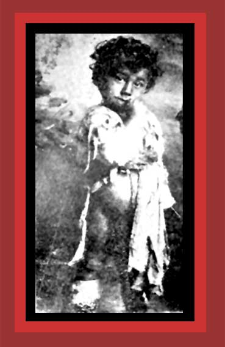

|
This is a photograph of a starving Armenian child in rags, a victim of Turkey's genocide. The child likely died soon after this photo was taken. Documentation: Death By Government, and Statistics of Democide. Source: "
Pictures of the Armenian Genocide." This and other pictures of the genocide are from James Nazer's book, The First Genocide Of The 20th Century: The Story Of The Armenian Massacres In Text And Pictures, and The Armenian Genocide As Reported In The Press, by Richard Kloian.
Return to Photographs of Democide, Room 3 Home |